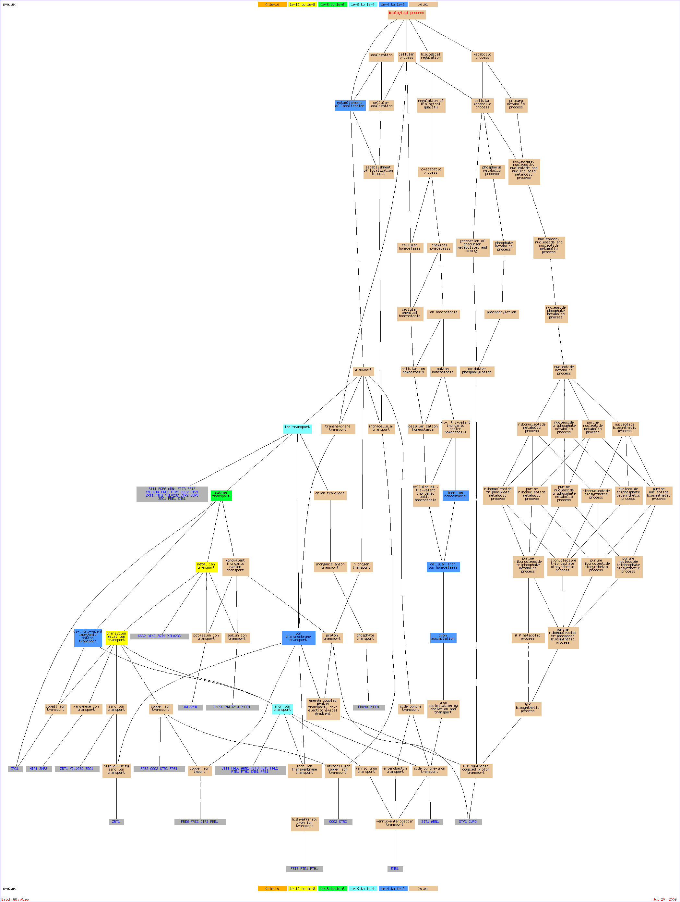

Of your input list, 269 genes are known or unknown but not ambiguous. The total number of genes used to calculate the background distribution of GO terms is 7274.Result Table| Terms from the Process Ontology of gene_association.sgd with p-value <= 0.01 | | Gene Ontology term | Cluster frequency | Genome frequency | Corrected
P-value | FDR | False
Positives | Genes annotated to the term |
|---|
| metal ion transport | 21 of 269 genes, 7.8% | 87 of 7274 genes, 1.2% | 1.82e-09 | 0.00% | 0.00 | SIT1, FRE6, ARN1, HIP1, PHO90, FIT3, FET3, YNL321W, FRE2, FTR1, CCC2, ATX2, ZRT1, FTH1, YIL023C, CTR2, SMF2, ZRC1, PHO91, ENB1, FRE1 | | transition metal ion transport | 17 of 269 genes, 6.3% | 57 of 7274 genes, 0.8% | 5.67e-09 | 0.00% | 0.00 | SIT1, FRE6, ARN1, HIP1, FIT3, FET3, FRE2, FTR1, CCC2, ZRT1, FTH1, CTR2, YIL023C, SMF2, ZRC1, ENB1, FRE1 | | cation transport | 23 of 269 genes, 8.6% | 136 of 7274 genes, 1.9% | 3.75e-07 | 0.00% | 0.00 | SIT1, FRE6, ARN1, HIP1, PHO90, FIT3, FET3, YNL321W, FRE2, FTR1, CCC2, STV1, ATX2, ZRT1, FTH1, YIL023C, CTR2, CUP5, SMF2, ZRC1, PHO91, FRE1, ENB1 | | ion transport | 23 of 269 genes, 8.6% | 165 of 7274 genes, 2.3% | 1.76e-05 | 0.00% | 0.00 | SIT1, FRE6, ARN1, HIP1, PHO90, FIT3, FET3, YNL321W, FRE2, FTR1, CCC2, STV1, ATX2, ZRT1, FTH1, YIL023C, CTR2, CUP5, SMF2, ZRC1, PHO91, FRE1, ENB1 | | iron ion transport | 10 of 269 genes, 3.7% | 32 of 7274 genes, 0.4% | 7.30e-05 | 0.00% | 0.00 | FRE2, FTR1, SIT1, FRE6, FTH1, ARN1, FIT3, FET3, ENB1, FRE1 | | di-, tri-valent inorganic cation transport | 11 of 269 genes, 4.1% | 47 of 7274 genes, 0.6% | 0.00044 | 0.00% | 0.00 | FRE2, FTR1, SIT1, FRE6, FTH1, ARN1, ZRC1, FIT3, FET3, ENB1, FRE1 | | maturation of SSU-rRNA | 15 of 269 genes, 5.6% | 94 of 7274 genes, 1.3% | 0.00085 | 0.00% | 0.00 | UTP13, YOR004W, UTP6, UTP14, SLX9, RPS24A, YGR271C-A, RPS1B, DBP8, RPS27A, RPS23B, RPS31, RPS23A, RPS6B, KRR1 | | ion transmembrane transport | 10 of 269 genes, 3.7% | 44 of 7274 genes, 0.6% | 0.00189 | 0.00% | 0.00 | FRE2, FTR1, STV1, FRE6, FTH1, ZRT1, CTR2, CUP5, FET3, FRE1 | | iron assimilation | 5 of 269 genes, 1.9% | 8 of 7274 genes, 0.1% | 0.00199 | 0.00% | 0.00 | FTR1, SIT1, ARN1, ENB1, FET3 | | establishment of localization | 74 of 269 genes, 27.5% | 1233 of 7274 genes, 17.0% | 0.00346 | 0.00% | 0.00 | ATG2, YPR174C, LAS17, YHR181W, RFA3, BET1, YIF1, YDR084C, FRE2, FTR1, YDR119W, STV1, ZDS1, ZRT1, YIL023C, ZRC1, YJL097W, FCY21, ENB1, BAP3, SFH5, ARN1, THP2, CCC2, MIG2, CTR2, CUP5, VPS52, CLN3, YDL046W, SEC66, FRE1, YIP3, FRE6, VRG4, ATG10, YLR022C, TPN1, RPS3, RFA2, HIP1, GOT1, GEA2, DSS4, FKS1, FIT3, BAP2, YMD8, FET3, AVT5, ATX2, FTH1, GNP1, ARC18, PHO91, YJL193W, YRB1, SEC61, SEC53, RPS26B, VRP1, SIT1, FUN26, HXT2, PHO90, ERV25, RFA1, HXT3, YNL321W, CAN1, AKR1, SMF2, PUF6, RPS19B | | maturation of SSU-rRNA from tricistronic rRNA transcript (SSU-rRNA, 5.8S rRNA, LSU-rRNA) | 14 of 269 genes, 5.2% | 93 of 7274 genes, 1.3% | 0.00391 | 0.00% | 0.00 | UTP13, YOR004W, UTP6, UTP14, SLX9, RPS24A, YGR271C-A, RPS1B, DBP8, RPS27A, RPS23B, RPS23A, RPS6B, KRR1 | | cellular iron ion homeostasis | 9 of 269 genes, 3.3% | 38 of 7274 genes, 0.5% | 0.00414 | 0.00% | 0.00 | FTR1, CCC2, SIT1, FRE6, ARN1, CUP5, TIS11, FET3, ENB1 | | iron ion homeostasis | 9 of 269 genes, 3.3% | 38 of 7274 genes, 0.5% | 0.00414 | 0.00% | 0.00 | FTR1, CCC2, SIT1, FRE6, ARN1, CUP5, TIS11, FET3, ENB1 |
Of your input list, 269 genes are known or unknown but not ambiguous. The total number of genes used to calculate the background distribution of GO terms is 7274.
Nodes in the graph are color-coded according to their p-value. Genes in the GO tree are associated with the GO term(s) to which they are directly annotated. To control the graph size, only significant hits with a p-value <= 0.01 and terms descended from them are included.

|
|


{kind=link}
{kind=link}